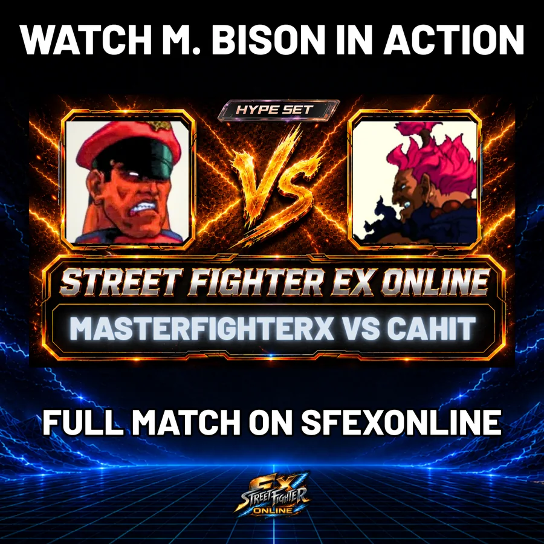

← ALL EX FIGHTER GUIDES
EX FIGHTER GUIDE #1 • EX PLUS ALPHA
M. Bison
M. Bison turns one mistake into a disaster.
Relentless pressure and dangerous Psycho Crusher conversions make him one of Street Fighter EX Plus Alpha’s most intimidating picks. Once he gets momentum, one opening can turn into the whole round.
01SEE M. BISON IN MOTION
SHORT GAMEPLAY EXAMPLE

02 • CHARACTER GUIDE
WHY PLAY M. BISON?
BEST FOR: Players who like charge inputs, forward pressure and attacking from awkward angles.
- Charge-based character with simplified commands
- Psycho Crusher and Scissor Kick drive his pressure
- Head Press creates tricky mix-ups from odd angles

▶03 • FEATURED MATCH
WATCH M. BISON IN A REAL SET.
MasterFighterX vs CahitDown 0–2 against Cahit’s Akuma, MasterFighterX’s Bison wins three straight rounds and finishes the comeback with a perfect. Nasty work.